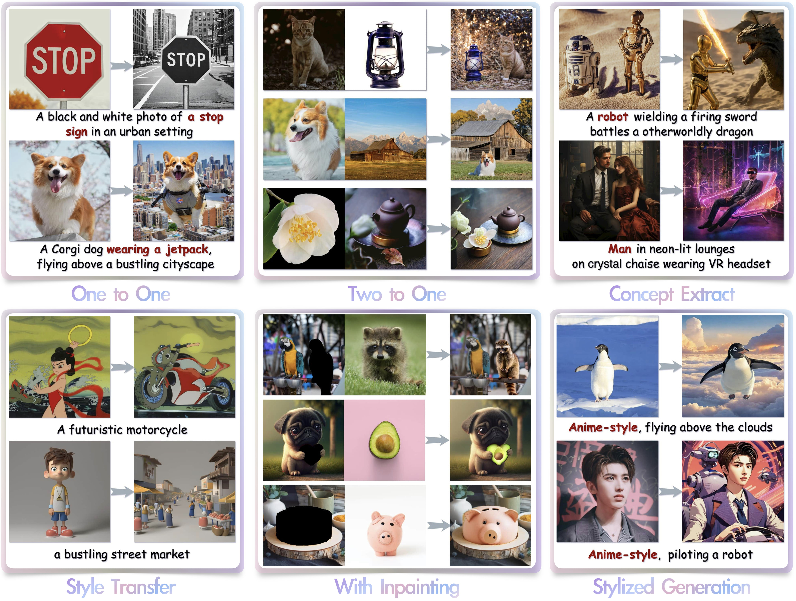
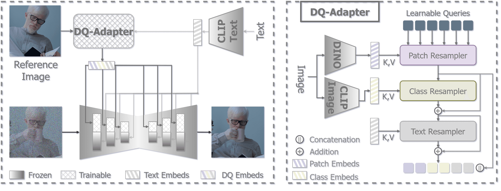
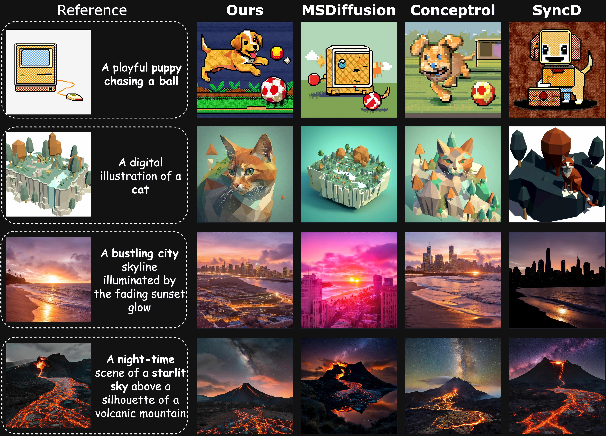
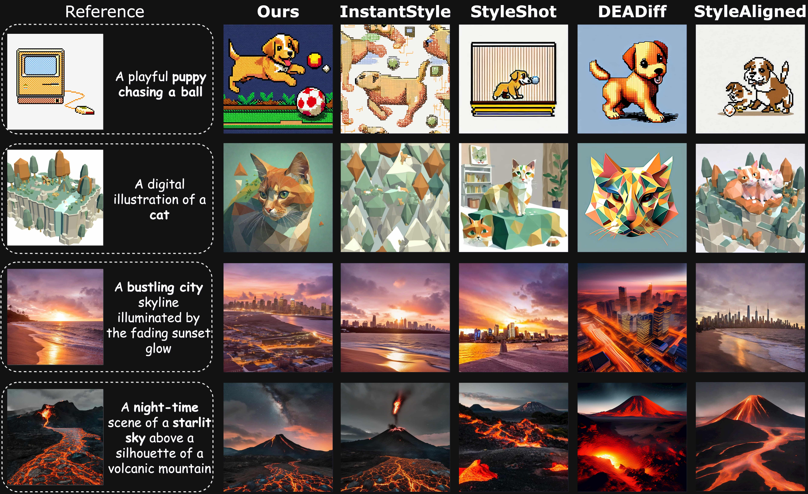

Comparison with SDXL-Based Methods on General Objects


The versatility of DQ-Adapter in universal image generation.
Although subject-driven image personalization has seen significant advances, existing methods still struggle to balance subject fidelity and personalization diversity. In this work, we focus on the paradigm of using resamplers to project control signals for personalization. By analyzing how external conditions (patch, class, or text embeddings) contribute to identity preservation and context variation, we show that the entanglement of learnable queries in existing resamplers hinders the independent contribution of each condition. To address this, we introduce DQ-Adapter, a novel framework that disentangles these queries via a cascading resampling process, allowing for improved control over each condition’s contribution. Specifically, each condition independently refines the learnable queries. First, patch embeddings preserve identity, then class embeddings adjust context, and finally, text embeddings align with user prompts. Residual connections within each stage ensure that the refined queries retain and build upon the information from previous stages, enhancing the coherence and fidelity of the generated image. Experimental results demonstrate that DQ-Adapter consistently preserves subject identity while offering rich, user-aligned context variations across various personalization tasks, outperforming existing methods on both fidelity and diversity metrics.

Pipeline of the Disentangled Queries Adapter, with the sequential processing stages for identity preservation, high-level context integration, and prompt alignment.



